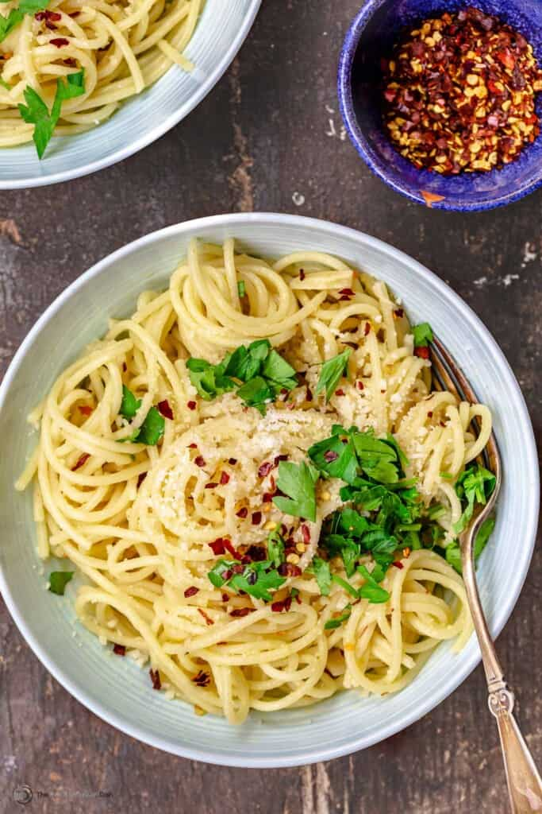

Algio E Olio

Description
Aglio e Olio is a traditional Italian dish
that originated somewhere in the South of Italy,
likely in the area of Naples. It is basically spaghetti
with garlic and olive oil.
Ingredients
- Spaghetti
- Olive Oil
- Garlic
- Red Pepper Flakes
- Grated Parmesan
- Parsley
Preparation
- Cook pasta until it is al dente,
later, drain the pasta and keep a cup of the water
- Warm your extra virgin olive oil over medium heat
and add the garlic. Cook until the garlic is
just turning golden (DO NOT brown the garlic),
stirring regularly and managing the heat
to prevent it from over-cooking.
Add the red pepper flakes and toss for
an additional 30 seconds.
- Ladle the remaining pasta cooking water to the pan.
Allow it to simmer until the liquid reduces by about ⅓.
- Once the sauce mixture has reduced, add in the cooked pasta.
Toss for a few minutes, then turn off the heat and
add parmesan and parsley. Toss to combine.
I recommend allowing the pasta to sit for
a couple of minutes, to absorb the sauce.